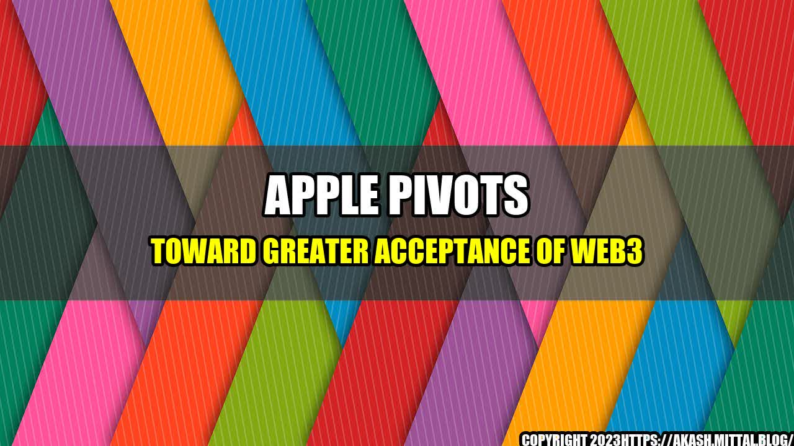

Apple Pivots Toward Greater Acceptance of Web3: Embracing the Future of Decentralized Technology

Apple has long been a company known for pushing the envelope when it comes to emerging technology and trends. From their pioneering role in the personal computer industry, to the introduction of the iPod and iPhone, Apple has consistently been at the forefront of innovation and disruption. However, when it comes to the world of blockchain and decentralized technology, Apple has been slow to adapt.
For years, Apple has been notoriously skeptical of blockchain and cryptocurrency, going so far as to ban crypto-related apps from their app store. This resistance to such a promising and revolutionary technology had led some to question whether or not Apple was falling behind the curve. However, recent developments at the company suggest a significant shift in attitude towards Web3.
The Shift towards Acceptance
Over the past year, Apple has taken a number of steps towards embracing blockchain and decentralized technology. In June of 2021, the tech giant officially announced its support for Non-Fungible Tokens (NFTs) - a type of blockchain-based digital asset that has taken the art world by storm. This announcement was quickly followed by the release of a series of developer tools that make it easier for app developers to build Web3-compatible applications for iOS devices.
More recently, Apple has made headlines with its participation in the W3C Blockchain Community Group, an organization dedicated to the development and deployment of blockchain-based solutions. This move has been seen as a clear indication that Apple is serious about exploring the possibilities of Web3 and integrating it into its products and services moving forward.
Apple's Pivot Towards Web3
While Apple's shift towards acceptance of Web3 is still in its early stages, there are already a number of concrete examples of the company's increased involvement in the blockchain space. Some of the most notable include:
- Support for Non-Fungible Tokens (NFTs) - Apple's recent announcement of support for NFTs signals a clear interest in blockchain-based digital art and collectibles. This could pave the way for the inclusion of NFT marketplaces in the App Store, further increasing the visibility and accessibility of these new forms of digital assets.
- Developer Tools for Building Web3 Apps - Apple's release of new developer tools for building Web3-compatible apps is a clear indication that the company is serious about supporting the blockchain ecosystem. This move could lead to an influx of new decentralized applications on the iOS platform, further cementing Apple's status as a leader in technology innovation.
- Participation in the W3C Blockchain Community Group - Apple's involvement in this group is a clear indication that the company is committed to exploring the possibilities of Web3. By collaborating with other industry leaders, Apple can help shape the future of decentralized technology and ensure that it remains accessible and beneficial to users.
The Future of Web3 and Apple's Role in It
With Web3 quickly becoming one of the most exciting and promising technologies of our time, it's clear that Apple's involvement in this space will play a significant role in shaping its future. While the company's pivot towards greater acceptance of blockchain and decentralization is still in its early stages, the signs are encouraging.
As the world continues to embrace Web3 and all that it has to offer, it's likely that Apple will play an increasingly important role in the development, adoption, and mainstreaming of this revolutionary technology. From NFTs and smart contracts, to decentralized finance and beyond, the possibilities of Web3 are endless - and with Apple on board, the future is looking brighter than ever.
In conclusion, Apple's pivot towards greater acceptance of Web3 is a significant step forward for the blockchain and decentralized technology ecosystem. By exploring the possibilities of this revolutionary technology and integrating it into its products and services, Apple is reaffirming its commitment to innovation and disruption. The future of Web3 is bright, and with Apple on board, the possibilities are limitless.
Three key takeaways from this article:
- Apple has taken significant steps towards embracing blockchain and decentralized technology in recent years, with announcements of support for NFTs, new developer tools for building Web3-compatible apps, and participation in the W3C Blockchain Community Group.
- These developments have opened up new opportunities for Web3 in the mainstream, and could pave the way for the integration of decentralized technology into everyday life.
- With Apple on board, the future of Web3 looks brighter than ever, and the potential for this revolutionary technology to change the world is rapidly becoming a reality.
References URLs:
- https://www.apple.com/newsroom/2021/06/apple-design-awards-celebrate-best-in-class-apps-and-games/
- https://developer.apple.com/documentation/walletkit
- https://www.w3.org/community/blockchain/
Hashtags:
- #Web3
- #Blockchain
- #Decentralization
- #NFTs
- #Apple
SEO Keywords:
- Apple
- Web3
- Blockchain
- Decentralization
- NFTs
- Smart Contracts
- Decentralized Finance
Article Category:
Tech
Curated by Team Akash.Mittal.Blog
Share on Twitter Share on LinkedIn